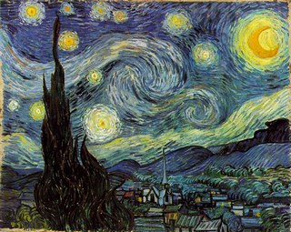

Звёздная ночь
Тема ночного неба и ранее занимала Ван Гога. В аналогичном ключе в 1888 году выполнена его работа "Звёздная ночь над Роной".
Ван Гог хотел изобразить звёздную ночь как пример силы воображения, которое может создать более удивительную природу, чем та, которую мы можем воспринять при взгляде на реальный мир.
Оригинал картины хранится в Музее современного искусства в Нью-Йорке.